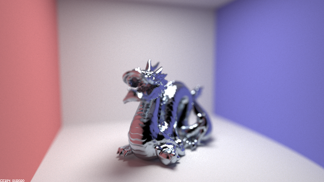
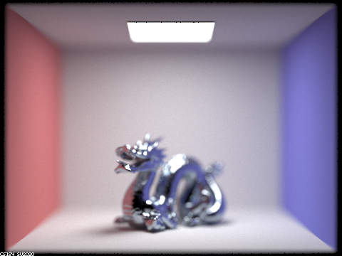
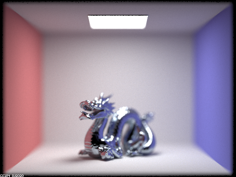
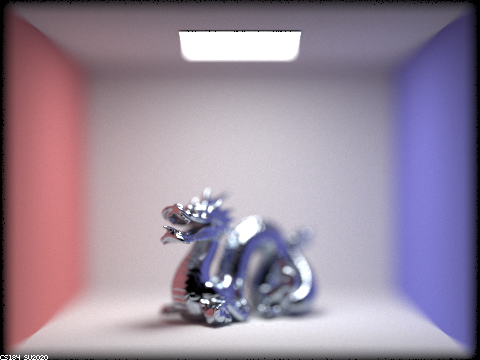

Part 2. Microfacet Material
Show a screenshot sequence of 4 images of scene `CBdragon_microfacet_au.dae` rendered with $\alpha$ set to 0.005, 0.05, 0.25 and 0.5. The other settings should be at least 128 samples per pixel and 1 samples per light. The number of bounces should be at least 5. Describe the differences between different images. Note that, to change the $\alpha$, just open the .dae file and search for `microfacet`.
|
CBdragon_microfacet_au.dae -s 4096 -l 16 -m 7 |
CBdragon_microfacet_au.dae -s 4096 -l 16 -m 7 |
|
CBdragon_microfacet_au.dae -s 4096 -l 16 -m 7 |
CBdragon_microfacet_au.dae -s 4096 -l 16 -m 7 |
To implement microfacet BRDF surfaces quite simply involved taking the relevant input parameters:
- incident ray direction
- reflected ray direction
- surface alpha
- surface macro normal
- surface index of refraction $\eta$
- surface index of refraction $k$
The texture of the golden dragon clearly gets less shiny as the value of alpha increases, and gets much more shiny as the value of alpha approaches zero. With a value of $\alpha = 0.005$, you can see that the surface is practically mirror-like, as if someone had been shining it for hours.
Another difference I noticed between the images is that lower values of alpha were significantly more prone to visual noise corrupting the scene. I attempted to mitigate this by running my renders with absolutely monstrous sample rates of 4096 samples per pixel and 16 samples per light source. Alas, there are still noticeable yellow speckles of light all over the ceiling of the $\alpha = 0.005$ render. I assume that this is because the increased specularity and shinyness is similar to making the surface significantly reflective and results in random rays of light being scattered all over, causing the speckles to show up on lower sample rates.
Show two images of scene `CBbunny_microfacet_cu.dae` rendered using cosine hemisphere sampling (default) and your importance sampling. The sampling rate should be fixed at 64 samples per pixel and 1 samples per light. The number of bounces should be at least 5. Briefly discuss their difference.

CBbunny_microfacet_cu.dae -s 64 -l 1 -m 7 |
CBbunny_microfacet_cu.dae -s 64 -l 1 -m 7 |
To implement importance sampling for microfacet surfaces, we simply use a random sampler to generate r1 and r2 as well as grab the alpha value of the surface for use in the provided equations to calculate relevant spherical coordinates $\theta$ and $\phi$.
We can then convert these to the cartesian system that the rest of our values are in to get our output sampled microfacet normal $h$.
Using this normal $h$, we can calculate a proper reflected angle and the PDF for this collision rather than just randomly cosine hemisphere sampling. This produces the same result, but saves computing time necessary for the pixels to converge.
In the images, we can see exactly this occur where, given the same sampling rates, the implementation with proper importance sampling for the Beckmann distribution provides a much cleaner looking bunny with far less random black splotches around the edges of the bunny
as well as far less random black speckles inside the bunny.
Show at least one image with some other conductor material, replacing `eta` and `k`. Note that you should look up values for real data rather than modifying them arbitrarily. Tell us what kind of material your parameters correspond to.

CBdragon_microfacet_os.dae -s 4096 -l 16 -m 7 |
CBdragon_microfacet_os.dae -s 4096 -l 16 -m 7 |
I tried out modifying the $\eta$ and $k$ values to match those of the element osmium from the website refractiveindex.info. The default publication from 1988's range did not include any data for the electromagnetic spectrum in the range of visible light, so I had to switch it to a publication from 1968 which did include values for visible light. I then simply copied over the $\eta$ and $k$ values for the respective wavelengths of red (614 nm), green (549 nm), and blue (466 nm) to a new copy of the "CBdragon_microfacet_au.dae" file as "CBdragon_microfacet_os.dae". I chose osmium after researching for conductor metals other than gold that could potentially have a beautiful color and am extremely satisfied with the result. The light blueish tint looks great.
Part 4. Depth of Field
For these subparts, we recommend using a microfacet BSDF scene to show off the cool out of focus effects you can get with depth of field!|

|
In a few sentences, explain the differences between a pinhole camera model and a thin-lens camera model.
With an ideal pin-hole camera model, all light that is recorded is in focus no matter how close or far away it is. It is impossible for any sort
of real camera to have an infinitely small pin-hole, so this is unrealistic. Real cameras have a lens radius such that only objects a specific distance
away from the camera, correlated with the radius of the lens, are perfectly in focus and everything closer or further away from that distance is more
and more out of focus the further away from that distance the object or surface is.
The thin-lens camera model mimics this by pretending that our light
is refracted as it passes through the virtual lens, just as it would passing through a real lens. Doing so achieves very realistic looking results on its own
even without having to worry about giving our lens any real thickness, so we keep our lens as just exactly one plane that rays pass through and get refracted
slightly before having their color values recorded from the image plane.
To implement this model in code, we must replace our old method of camera ray generation. Previously, we simply used the x and y values for the pixel to calculate
the direction of the corresponding ray leaving the virtual pin-hole. Now instead, we must additionally use the lens radius (aperture) and random values rndR and rndTheta to uniformly random sample a point on the thin lens.
We can then use the original direction vector (from the old method) and scale it by the focal distance to calculate the point of focus. We then subtract the point of focus from the point on the lens to
get our new direction vector. We must lastly make sure to convert this direction from camera coordinates to world coordinates before returning the ray (also offset the old origin of the ray by the point on the lens converted to world coordinates: c2w * pLens + pos).
Show a "focus stack" where you focus at 4 visibly different depths through a scene. Make sure to include all screenshots.
|

CBdragon_microfacet_os.dae -s 4096 -l 16 -m 7 |
CBdragon_microfacet_os.dae -s 4096 -l 16 -m 7 |
|
CBdragon_microfacet_os.dae -s 4096 -l 16 -m 7 |
CBdragon_microfacet_os.dae -s 4096 -l 16 -m 7 |
Show a sequence of 4 pictures with visibly different aperture sizes, all focused at the same point in a scene. Make sure to include all screenshots.
|
CBdragon_microfacet_os.dae -s 4096 -l 16 -m 7 |
CBdragon_microfacet_os.dae -s 4096 -l 16 -m 7 |
|

CBdragon_microfacet_os.dae -s 4096 -l 16 -m 7 |

CBdragon_microfacet_os.dae -s 4096 -l 16 -m 7 |